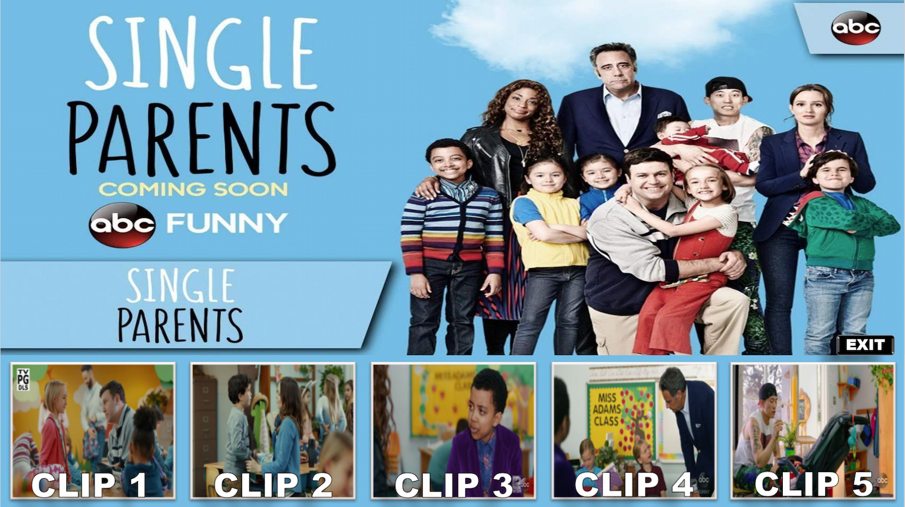

Aulas de inglês · 100% online
Professor de Inglês para adolescentes e adultos
Ensino regular do iniciante ao avançado, com aulas individuais, em dupla, trio ou grupo. Para quem já está no B1 ou acima, também trabalho com aulas conversacionais
Atendo online alunos de diferentes regiões do Brasil e brasileiros que vivem no exterior

Aulas
O que você pode estudar comigo
O ponto de partida é o seu nível de inglês. A partir daí, o conteúdo e a dinâmica da aula mudam conforme o que precisa ser desenvolvido e o formato em que você estuda
General English do iniciante ao avançado, trabalhando compreensão, vocabulário, estrutura e produção ao longo do curso
A modalidade conversacional começa a partir do B1, quando já existe base para sustentar uma aula com mais produção oral
Quando o aluno precisa usar inglês no trabalho, situações, textos e vocabulário da área podem entrar nas aulas de forma mais específica
Inglês para o trabalho
Algumas áreas pedem um inglês mais específico
Em certos trabalhos, o aluno precisa explicar problemas, participar de reuniões, lidar com documentação ou usar um vocabulário que não aparece com a mesma frequência no inglês geral. Nesses casos, esse contexto pode ganhar mais espaço nas aulas
Outras áreas profissionais também podem entrar nas aulas quando houver uma necessidade concreta de uso do inglês
Portal dos Alunos
Materiais, atividades e acompanhamento em uma área própria
Meus alunos têm acesso a um portal que já faz parte das aulas. As telas ao lado são do sistema real, não mockups criados para divulgação
Passe pelas telas para ver áreas diferentes do Portal


Formas de estudar
Quatro formatos de aula
Duplas, trios e grupos são formados conforme vagas e compatibilidade de nível entre os alunos
Como trabalho
A aula e o que acontece entre uma aula e outra precisam conversar entre si
O conteúdo trabalhado durante a chamada pode continuar em materiais e atividades no Portal. Isso permite manter histórico e continuidade sem transformar a aula em uma sequência rígida de etapas
- NíveisDo iniciante ao avançado no ensino regular
- ConversaçãoA partir do B1
- AulasOnline pelo Google Meet
- Fora da chamadaPortal com materiais, atividades e acompanhamento
Nas aulas
Atividades e materiais usados nas aulas

Dúvidas frequentes
Antes de entrar em contato
Preciso já saber inglês?
Não. O ensino regular atende desde quem está começando até alunos de níveis avançados
Posso começar direto com aulas de conversação?
A modalidade conversacional é oferecida a partir do B1. Antes disso, trabalho com ensino regular
As aulas são presenciais?
Não. Meu atendimento é 100% online para alunos no Brasil e brasileiros que vivem no exterior
Onde vejo os valores?
Os valores não ficam expostos na primeira página. Na ferramenta de formatos, você pode comparar as opções e consultar a mensalidade depois de escolher uma combinação
Contato
Quer conhecer as aulas?
Você pode falar comigo diretamente pelo WhatsApp ou preencher o formulário
Se preferir e-mail: marcosvinifs@gmail.com